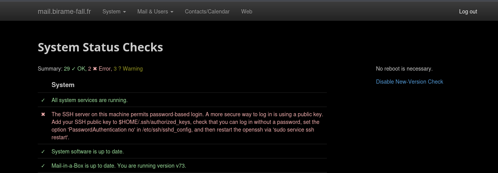

Déploiement d'un Serveur de Messagerie Complet (Mail-in-a-Box)
Mise en œuvre d'une solution complète de messagerie électronique auto-hébergée (SMTP, IMAP, Webmail et cloud), gestion de la sécurité DNS critique (SPF, DKIM, DMARC) et durcissement du serveur pour garantir une délivrabilité optimale.

1. Le Défi de la Fiabilité et de la Sécurité d'un Mail Server
L'objectif était de maîtriser l'architecture complexe d'un serveur de mail pour l'héberger personnellement, tout en assurant une délivrabilité (non-classement en spam) parfaite et une sécurité maximale. Ce processus exige la gestion d'une multitude de protocoles (SMTP, POP3/IMAP, HTTPS) et de nombreux enregistrements DNS spécifiques.
Objectifs Clés de la Mise en œuvre
- Déploiement Complet : Mettre en place la stack complète (Postfix, Dovecot, SpamAssassin) de manière automatisée.
- Sécurité DNS : Configurer les enregistrements critiques SPF, DKIM et DMARC pour valider l'authenticité de l'expéditeur.
- Durcissement : Sécuriser les accès SSH et les certificats TLS/SSL pour tout le trafic.
- Gestion des Comptes : Fournir un accès Webmail et synchroniser mes comptes mail sur différents clients (Outlook, Thunderbird).
2. La Solution Technique : Mail-in-a-Box sous Linux
J'ai choisi la solution open source Mail-in-a-Box, qui automatise l'installation et la configuration de tous les composants de la stack mail sous un environnement Linux Ubuntu Server. Cela a permis de se concentrer sur les défis de la sécurité et de la connectivité externe.
Architecture et Configuration
- Mail-in-a-Box : Installation automatisée de Postfix, Dovecot, et Nginx (pour le Webmail).
- DNS Records : Modification manuelle des enregistrements MX et vérification des enregistrements A/AAAA.
- Certificats SSL/TLS : Configuration de Let's Encrypt pour le chiffrement des communications.
- Durcissement du Serveur : Configuration du firewall (UFW) pour n'autoriser que les ports essentiels (25, 465, 587, 80, 443, etc.).
Focus sur la Sécurité des Emails (Délivrabilité)
La réussite de ce projet dépendait entièrement de la validation des mécanismes anti-spam par les grands fournisseurs (Gmail, Outlook).
- SPF (Sender Policy Framework) : Enregistrement DNS pour lister les serveurs autorisés à envoyer des mails pour le domaine.
- DKIM (DomainKeys Identified Mail) : Signature cryptographique des emails pour garantir qu'ils n'ont pas été altérés.
- DMARC (Domain-based Message Authentication, Reporting, and Conformance) : Politique globale pour indiquer aux récepteurs comment traiter les emails non validés.
3. Validation & Compétences Acquises
Le serveur de mail est désormais pleinement opérationnel, capable d'envoyer et de recevoir des emails de manière fiable et sécurisée.
Bénéfices Techniques Confirmés
- Sécurité des Services Publics : Maîtrise de l'ensemble des mécanismes (SPF, DKIM, DMARC) requis pour la bonne réputation d'un serveur.
- Administration Systèmes : Capacité à déployer et maintenir une stack de services critiques sous Linux.
- Ingénierie DNS Avancée : Expertise dans la configuration des enregistrements DNS complexes et des zones de domaine.
- Indépendance Technique : Démontre la capacité à auto-héberger des services vitaux.
Leçons Apprises
Le principal challenge résidait dans le déblocage des flux SMTP (port 25), souvent filtrés par les fournisseurs de services, un obstacle typique des auto-hébergements. J'ai renforcé ma compréhension du rôle de chaque enregistrement DNS dans la chaîne de sécurité des communications.